in_SITE es una herramienta para armar y visualizar salas expositivas virtuales en 3D. Pensada originalmente para muestras de arte, también sirve como recurso para entornos pedagógicos y educativos — cualquier situación donde sea útil montar y recorrer un espacio expositivo sin necesidad de un espacio físico.
Elegí un modo de la lista para ver sus instrucciones.
El editor. Acá armás la sala: definís sus dimensiones, agregás imágenes, videos y esculturas (.obj), las ubicás en el espacio, y completás la ficha técnica de cada pieza (título, artista, año, técnica, descripción, especificaciones de traslado y montaje).
.json editable para retomar la edición más adelante..glb final (y su .json de fichas técnicas vinculado).
Se reproduce en vivo mientras armás la sala en el editor,
y también en la vista de escritorio de Visualizador y
Galería (como una textura real, respetando la
perspectiva de la pared). En Realidad Aumentada, en
cambio, se ve como una imagen fija — es una limitación
del formato .glb en sí, no de la aplicación.
Se recomienda comprimir los videos antes de subirlos (menos de 30 MB) — los archivos muy pesados pueden agotar la memoria del navegador al exportar la sala.
El visor. Acá cargás una sala que ya exportaste desde
Proyectos (un archivo .glb, opcionalmente
junto con su .json de fichas técnicas) para
recorrerla en 3D, ver la información de cada pieza, y
activar la Realidad Aumentada en el celular.
Se reproduce en vivo, como una textura real que respeta
la perspectiva de la pared. En Realidad Aumentada se ve
como una imagen fija — es una limitación del formato
.glb en sí, no de la aplicación.
Las muestras y piezas propias del estudio, ya armadas y disponibles para visitar directamente, sin necesidad de subir ningún archivo.
Se reproduce en vivo, como una textura real que respeta
la perspectiva de la pared. En Realidad Aumentada se ve
como una imagen fija — es una limitación del formato
.glb en sí, no de la aplicación.

VOLVER